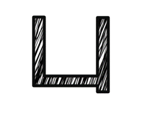
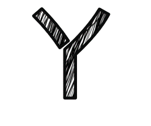

location.href='../../view/game/drawzhuyin.html?id=yu&counties=taichung',800);playBPM(this);" />
location.href='../../view/game/drawzhuyin.html?id=a&counties=taichung',800);playBPM(this);" />
location.href='../../view/game/drawzhuyin.html?id=o&counties=taichung',800);playBPM(this);" />
location.href='../../view/game/drawzhuyin.html?id=e&counties=taichung',800);playBPM(this);" />
location.href='../../view/game/drawzhuyin.html?id=ae&counties=taichung',800);playBPM(this);" />
location.href='../../view/game/drawzhuyin.html?id=ai&counties=taichung',800);playBPM(this);" />
location.href='../../view/game/drawzhuyin.html?id=ei&counties=taichung',800);playBPM(this);" />
X
位於臺灣中部，為六都之一，四季氣候宜人，是縱貫鐵路的中點，也是中部交通樞紐及教育、文化中心。